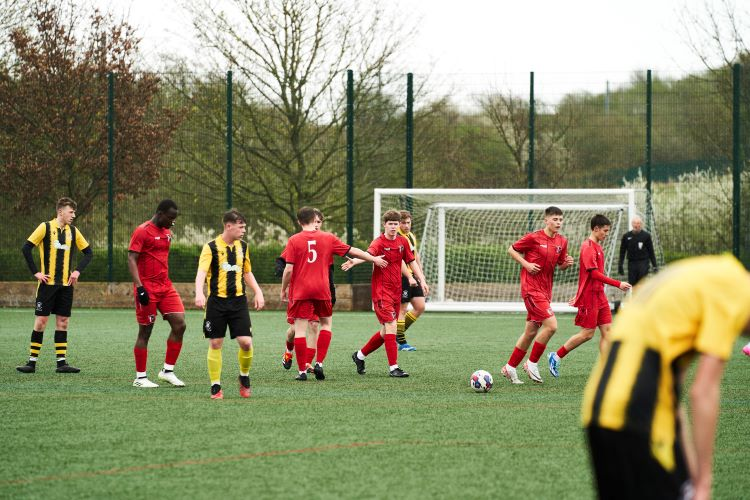
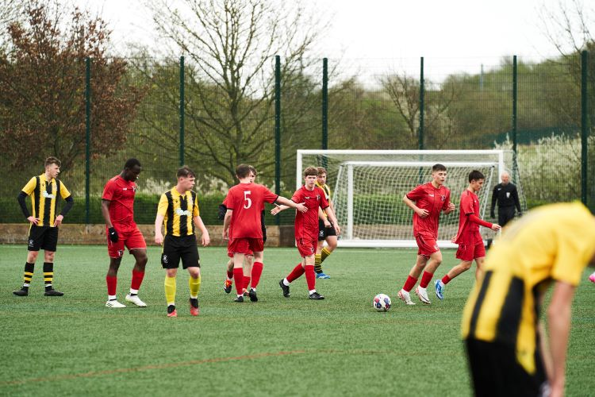

Play with Ginga Fivestars soccer academy is a professional football academy, providing coaching to boys and girls aged 5-17 of all abilities. Our philosophy derives from the Brazilian "Ginga" style of play. Ginga is about being expressive with the ball to bring joy to yourself and others. We strive to create a coaching environment where young players enjoy the process of learning new skills and putting them into practice. Based in Uganda, we have a very talented and experienced team of coaches who have played and coached at the highest level in both football and futsal. We have strong links with professional football clubs, providing our most talented players with a pathway into academy football.
About fivestars football Academy. Since 2011, Fivestars Football Academy has brought together young people from all over the world in the golden capital of the Republic of Uganda, in the most beautiful city in Entebbe. Many individual players and entire football teams come to our training camps. The main task of Fivestars Football Academy is to produce the best football palyers in the country and tha will play at the highest kevel worldwide. We gather and train many uprising players to become football star players thus our academy is highely rated in the country because of the qualities of players it produces. We exchange experiences and acquire language and game practice in friendlies and official tournaments. The Academy is also pleased to welcome everyone who want to experience the full atmosphere of professional European football. In order for players to feel comfortable in the teams, they are divided by age and training level. We develop skills and help football players who play in different positions to gain game practice.
Fivestars Football Academy cooperates with the leading football clubs in Uganda and the the world at large. The main priorities of our International Football Academy are quality education and a professional teaching approach. Unique training methods, intensive game practice, only experienced coaches and assistants, equipment and equipment from world famous manufacturers. All this is our standard. We develop excellent semester and annual programs. They include classes at Fivestars Football Academy and intensive preparation for admission to universities in Uganda and the whole world. Our programs include: daily training, friendly games, official championship and cup games, participation in international tournaments, a rich cultural program, as well as language courses. The sports component of the program was developed together with Uganda Football Federation and was approved by the best coaches and methodologists.As part of our programs, you will not only play sports under the guidance of the best coaches in the country but you will also study anything of your your choice. Experienced teachers and native speakers act as mentors. Participants in our football programs have a great opportunity to make their way in the best football clubs but that's not all! In free time, cultural recreation is organized for program participants. Accompanied by the fivestars team, they will get to know the country, its culture and visit popular museums and historical monuments. And ofcourse the entertainment program includes regular visits to the stadiums and matches of the Uganda Championship and UEFA League! Also, for active recreation, you have the opportunity to visit all the cities in the country and neighbouring countries. experience a tremendous and unforgettably fun times during the summer holidays and all year round!
OUR VISION: To help soccer athletes to realise their full potential both on and off the pitch by providing world-class professional soccer training complemented with world-leading educational opportunities
OUR VALUES: The philosophy of the Choices Pro-Experience | West Ham United Foundation Academy of Football is shaped by the values that will provide the platform for participants as players and in life. Values that go beyond the football field, are present in everyday life, and that will be essential in the progress of the player's training
| Name | Role | Experience |
|---|---|---|
| Sir James Robin | Co-founder & Executive director | 10 years |
| Joan Naks | Executive director | 6 years |
| Julius | Director | 7 years |
| Andrew Kalumba | Co-founder & Executive director | 10 years |
| Edwin Xavi | Coach | 13 years |
| Arnold | Coach | 9 years |
| jessica gibs | Coach | 9 years |


 
